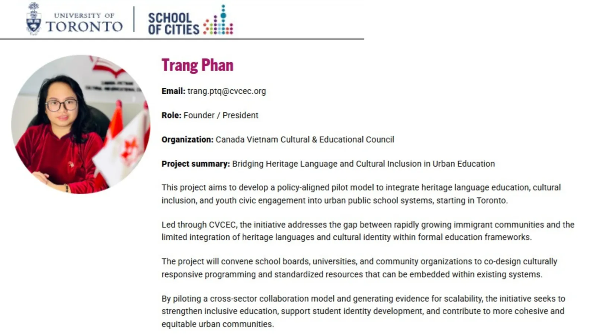

University of Toronto · School of Cities · 2026
Leading Urban Change: bringing Vietnamese into Toronto’s public schools
CVCEC’s project was one of 16 selected for the 2026 Leading Urban Change program. It is building a pilot model for language education, cultural inclusion and youth civic engagement in urban public schools, starting in Toronto.
1 of 16
projects selected for the 2026 cohort
Apr 2026
selected by the School of Cities, U of T
Jun 2026
program completed by our founder
K–8
TDSB International Languages, which includes Vietnamese
436
free lessons and activities ready for schools to use
15+
youth leaders trained through VYRH


The project
Bridging Heritage Language and Cultural Inclusion in Urban Education
Led by CVCEC Founder and President Phan Thị Quỳnh Trang, the project looks at how a small newcomer community’s language and culture can become part of everyday learning in a big city’s public schools.
- Language: share CVCEC’s free, curriculum-aligned Vietnamese resources with school boards, starting with the Toronto District School Board’s weekend International Languages classes
- Inclusion: help newcomer students and parents understand Canadian schools through bilingual orientation guides
- Youth civic engagement: train Vietnamese-Canadian youth leaders through the Viet Youth Readiness Hub
From idea to practice
What has happened since
| When | Step |
|---|---|
| Feb–Mar 2026 | Dialogue and working session with the Toronto District School Board on Vietnamese language programs and student pathways |
| Apr 2026 | Selected as 1 of 16 Leading Urban Change projects; Viet Youth Readiness Hub launched in Toronto |
| Jun 2026 | Founder completes the program; CVCEC sponsors the global education roundtable at the 8th Ontario K-12 International Education Conference |
| Jul 2026 | Free online school Trường Tiếng Việt Của Em launched in Toronto |
| Oct 2026 | CVCEC accompanies TDSB on an education mission to Hanoi and Ho Chi Minh City (12–19 October) |
| Dec 2026 | First in-person Saturday classes at North York Central Library: 6 children and 10 adults in the first intake |
| 2027–28 | Goal: offer CVCEC learning resources to several Ontario school boards |
Are you a school board or school?
Talk to us about using our free Vietnamese resources in your language programs.